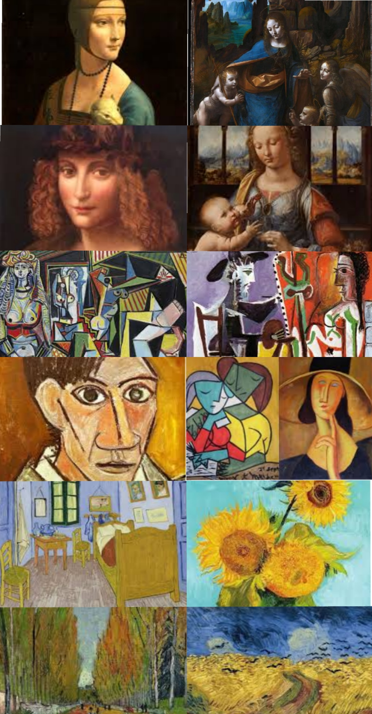

| OM SITEN | Leonardo | Pablo | Vincent |


Leonardon da Vinci.
Leonardo da Vinci född 15 april 1452 i Anchiano nära Vinci i Toscana, död 2 maj 1519 i Amboise i Frankrike, var ett italienskt universalgeni. Han betraktas som den första högrenässansmästaren[8] och var verksam som konstnär, arkitekt, ingenjör, uppfinnare, naturforskare, matematiker, musiker och filosof.[9] Leonardo tillhör renässansens mest betydelsefulla gestalter. Han är mest känd för målningen Mona Lisa, utförd 1503–1506, samt fresken Nattvarden från 1498.